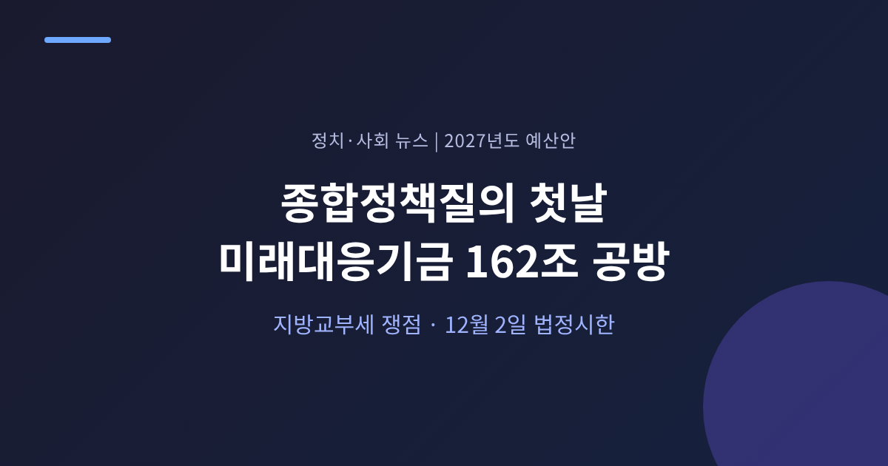
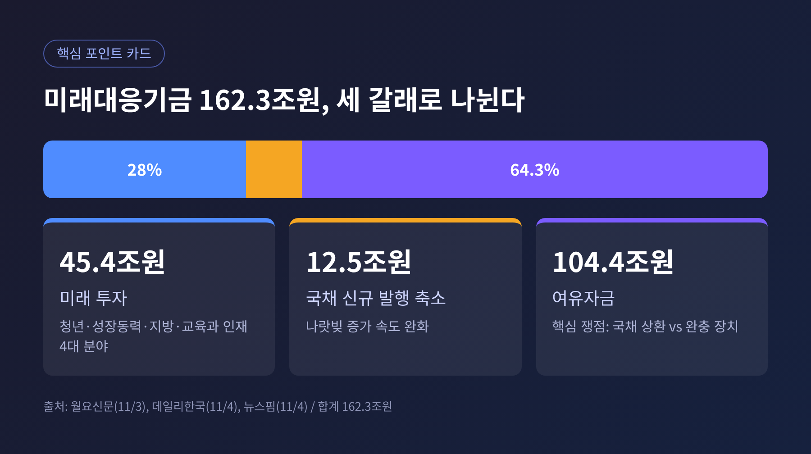
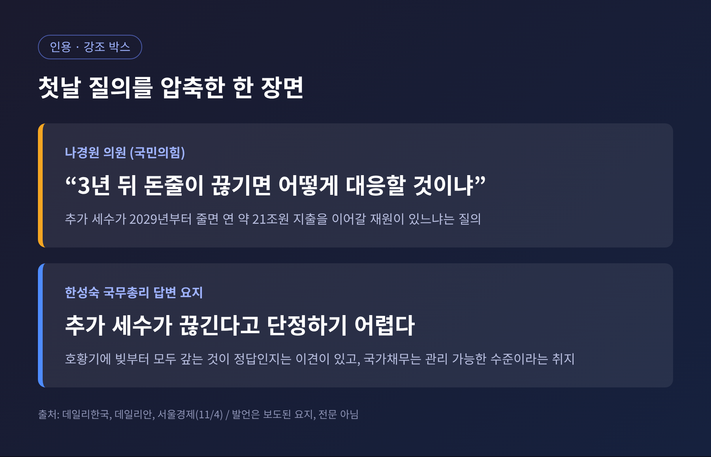
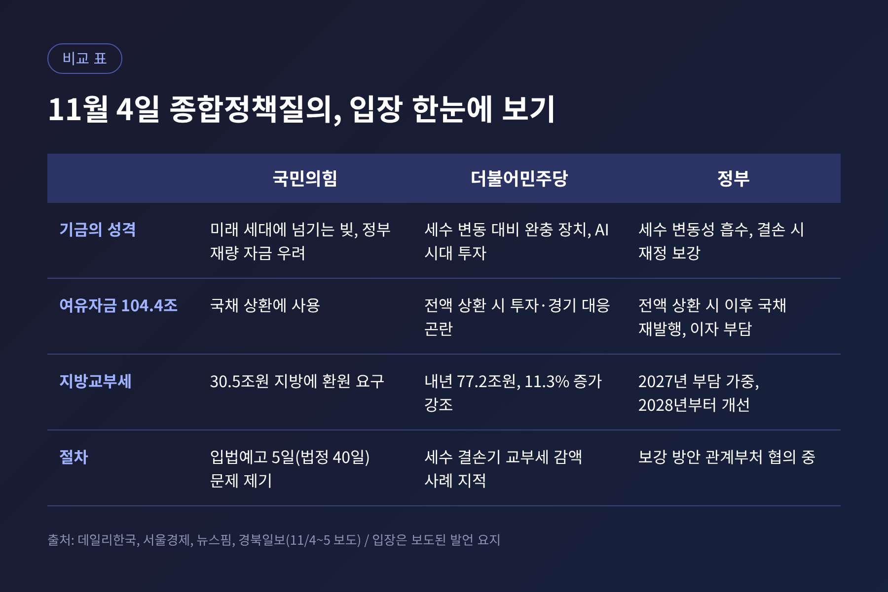
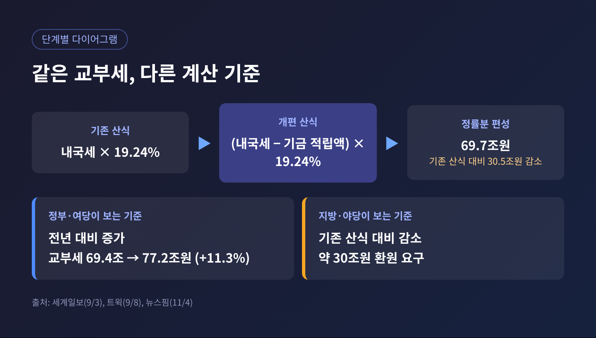
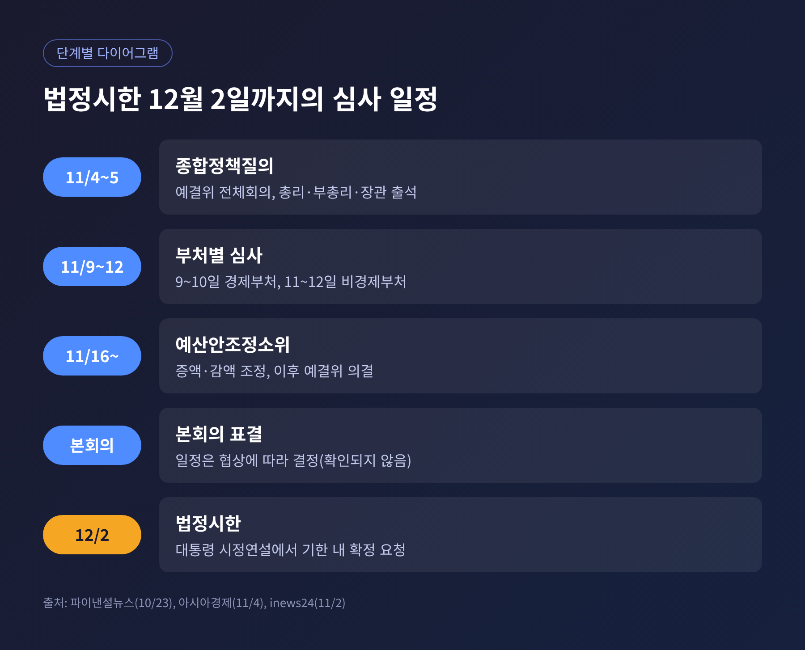

2026년 11월 4일, 국회 예산결산특별위원회가 2027년도 예산안(약 820조9000억원)에 대한 종합정책질의를 시작했습니다. 첫날 질의는 신설 기금인 미래대응기금 162조3000억원과 그 여파로 지방교부세가 줄어든다는 논란에 집중됐습니다. 이번 글에서는 질의장에서 오간 쟁점을 여야와 정부 입장으로 나누어 정리하고, 법정시한인 12월 2일까지의 심사 흐름을 살펴보겠습니다.
예결위는 4일 오전 전체회의를 열고 질의에 들어갔습니다. 질의는 5일까지 이틀간 이어집니다. 한성숙 국무총리, 이형일 부총리 겸 재정경제부 장관, 박홍근 기획예산처 장관이 출석했습니다. 박 장관이 예산안을 설명했고, 총리가 의원 질의에 답했습니다.
2027년도 총지출은 820조9000억원입니다. 올해 본예산보다 12.8% 늘어난 역대 최대 규모입니다. 이광재 예결위원장은 예산뿐 아니라 연기금, 국공유재산, 정책금융 같은 국가 자산의 활용 방안도 함께 살펴봐 달라고 당부했습니다.
첫날 공방의 중심은 한 곳이었습니다. 미래대응기금입니다.

정부는 반도체 호황으로 늘어난 추가 세수, 정확히는 최근 10년 내국세 추세를 웃도는 초과분을 재원으로 기금을 신설합니다. 규모는 162조3000억원입니다. 이재명 대통령은 11월 2일 시정연설에서 이 기금을 "재정 저수지"에 가깝게 설명했습니다. 늘어난 세수를 당장 쓰지 않고 미래 성장과 위기 대응을 위해 쌓아 두겠다는 취지입니다.
운용 계획은 세 갈래입니다. 청년·성장동력·지방·교육과 인재 등 4대 분야 미래 투자에 45조4000억원, 국채 신규 발행 축소에 12조5000억원, 나머지 104조4000억원은 여유자금으로 둡니다. 쟁점은 이 여유자금을 어디에 쓰느냐입니다.
국민의힘 나경원 의원은 추가 세수가 2029년부터 줄어들 수 있다고 짚었습니다. 그러면 기금이 매년 약 21조원씩 쓰는 사업을 이어갈 재원이 있느냐고 물었습니다. "3년 뒤 돈줄이 끊기면 어떻게 대응할 것이냐"는 질문이었습니다. 여유자금 104조4000억원은 국채 상환에 써야 한다는 주장도 폈습니다. 과도한 부채를 미래 세대에 넘기는 일이라며 "재정적 아동학대"라는 표현까지 썼습니다.

박수영 의원은 절차를 문제 삼았습니다. 기금 관련 입법예고가 행정절차법상 40일이 아닌 5일에 그쳤다는 지적입니다. 기금 130개 사업 가운데 94%가 다년도 사업이라는 점도 거론했습니다. 대부분이 여러 해에 걸쳐 예산이 들어가는 사업이라는 점을 부각한 것입니다.
더불어민주당 안도걸 의원은 반대편에서 답했습니다. AI 전환기에 뒤처질 수 없고, 초과 세수를 기금 없이 곧바로 쓰면 물가 압력이 될 수 있다는 논리입니다. 이건태 의원은 윤석열 정부 시기 세수 결손으로 지방교부세와 교육교부금이 줄었던 사례를 들었습니다. 세수에 따라 지출을 늘렸다 줄이는 방식으로는 안정적 재정 운영이 어렵다는 것입니다.
정부의 답변은 양쪽 사이에 있었습니다. 한 총리는 추가 세수가 끊긴다고 단정하기 어렵다고 했습니다. 호황기에 빚부터 모두 갚는 것이 정답인지도 전문가 의견이 갈린다고 말했습니다. 국가채무는 관리 가능한 수준이라는 평가도 덧붙였습니다. 박 장관은 여유자금을 전부 상환에 쓰면 이후 국채를 다시 찍어야 해 이자 부담이 커질 수 있다고 설명했습니다.

이날 두 번째 쟁점은 지방 재정이었습니다. 숫자부터 보겠습니다.
2027년 지방교부세 편성액은 77조1899억원입니다. 이 중 내국세에 연동되는 정률분은 69조6653억원입니다. 그런데 산정 방식이 바뀌었습니다. 예전엔 내국세의 19.24%였습니다. 이제는 미래대응기금 적립액을 뺀 내국세의 19.24%입니다. 이 때문에 기존 산식보다 30조5000억원이 줄어든다는 것이 지방 측과 야당의 계산입니다.
정부와 여당의 계산은 다릅니다. 이건태 의원은 내년 지방교부세가 올해 69조4000억원에서 77조2000억원으로 11.3% 늘어난다고 밝혔습니다. 교육교부금도 71조7000억원에서 78조9000억원으로 10.1% 늘어난다는 전망입니다. 올해 본예산 정률분 63조6000억원과 비교해도 늘었다는 것이 정부의 설명입니다. 행정안전부는 줄어든 교부세가 기금의 지방계정으로 다시 지방에 지원되고, 용처 지정 없이 쓸 수 있는 지방미래성장지원금 3조5000억원을 더하면 자율 재원이 약 15% 늘어난다고 주장해 왔습니다.
두 주장은 틀린 숫자를 두고 다투는 것이 아닙니다. 기준이 다릅니다. 정부는 전년 대비 증가율을 보고, 지방은 기존 산식대로였다면 받았을 금액과의 차이를 봅니다. "교부세 11% 늘린다"와 "30조 돌려달라"가 동시에 성립하는 이유입니다.

지방의 우려는 금액만이 아닙니다. 기금 지방계정은 15조3000억원인데, 전진숙 의원은 그중 지자체가 자유롭게 쓸 수 있는 돈은 약 3조5000억원이라고 짚었습니다. 나머지는 사업 단위로 공모해야 받는 돈입니다. 나라살림연구소는 지자체 자율 재원이 최소 10조원 이상 줄 수 있다고 분석했습니다. 국민의힘 박상웅 의원은 지방교부세율이 그대로여도 기금 몫을 먼저 떼니 지자체가 덜 받는다며, 밀양·의령·함안·창녕 4개 시군의 내년 손실을 약 5000억원으로 추산했습니다.
이에 박 장관은 기금이 지방 예산을 줄인다는 주장을 받아들이지 않았습니다. 세수가 줄던 시기에 지방이 오히려 교부세를 덜 받았다는 점을 들었습니다. 다만 2027년에는 지방교육과 지방정부의 부담이 다소 커질 수 있고, 2028년부터 크게 개선된다고 인정했습니다. 보강 방안은 행정안전부 등과 협의 중이며 구체적 규모와 방식은 아직 정해지지 않았습니다.
교육 쪽도 가세했습니다. 정부안은 교육교부금의 내국세 20.79% 연동을 폐지하고 경제성장률과 학령인구 변화를 반영하는 방식으로 바꿉니다. 시도교육감협의회는 현행 비율을 유지하되, 5%를 넘는 증가분의 3분의 2만 기금으로 보내자는 절충안을 냈습니다. 내년 교육 예산이 필요액보다 약 7조원 부족하다는 주장도 함께였습니다.
기금 말고도 양측은 전체 증감액에서 엇갈립니다. 국민의힘은 100대 문제 사업에서 약 27조원을 줄이고, 청년·국민안전·생업·일자리·생활불안 해소의 5대 분야에 11조5924억원을 늘리자는 안을 내놨습니다. 한병도 민주당 원내대표는 국민의힘이 30조원 삭감을 예고했다고 말했는데, 보도마다 27조원과 30조원이 함께 쓰이고 있습니다. 이 글에서는 두 수치를 모두 적습니다.
민주당은 사람·인프라, 지방재정, 민생경제, 국민안전 4대 분야 증액을 내세웁니다. 한 원내대표는 심사 전에 삭감액부터 정하는 것은 책임 있는 심사가 아니라고 비판했습니다. 국민의힘 장동혁 대표는 재정 확대가 국가채무 증가로 이어질 수 있다고 우려합니다. 한쪽은 "지금 투자할 때", 다른 쪽은 "빚부터 줄일 때"라는 구도가 그대로 예산 숫자에 옮겨 붙은 모습입니다.
앞으로의 일정은 정해져 있습니다. 5일 종합정책질의가 끝나면 9~10일 경제부처, 11~12일 비경제부처 심사가 이어집니다. 16일부터는 예산안조정소위원회가 증액과 감액을 손봅니다. 소위를 거친 안을 예결위가 의결하면 본회의로 넘어갑니다. 법정시한은 12월 2일입니다.

이재명 대통령은 시정연설에서 예산안과 부수 법안을 12월 2일까지 확정해 달라고 요청했습니다. 더 나은 대안은 당파와 관계없이 반영하겠다는 말도 했습니다. 한 원내대표는 기한 내 처리를 목표로 하되, 국회의장에게 3주간 매주 목요일 본회의를 열어 달라고 요청하겠다고 했습니다. 국민의힘이 정쟁으로 막으면 단호히 대응하겠다는 경고도 있었습니다. 야당 일각에서는 장외투쟁 검토가 거론되는 것으로 전해집니다.
여기서부터는 전망입니다. 확인된 사실이 아니라 현재 구도에서 읽을 수 있는 갈림길입니다.
첫째, 기금의 구조는 유지하되 지방과 교육 재원을 보강하는 절충입니다. 정부가 이미 보강 방안을 협의 중이라고 밝혔고, 교육감협의회의 절충안도 나와 있어 접점이 만들어질 여지는 있습니다. 둘째, 여유자금 104조4000억원의 용처를 둘러싼 대립이 소위 단계까지 이어지는 경우입니다. 여야가 "미래 투자"와 "국채 상환"이라는 원칙을 맞세우고 있어 숫자 조정만으로 풀리기는 쉽지 않습니다. 셋째, 쟁점 법안과 예산이 맞물려 일정이 빠듯해지는 경우입니다. 다만 기금과 교부세 개편에 필요한 부수 법안이 어떤 순서로 처리될지는 아직 확인되지 않았습니다.
어느 길로 가든 지켜볼 대목은 같습니다. 기금의 규모가 조정되는지, 지방에 얼마가 더 돌아가는지, 12월 2일을 지키는지입니다. 5일 질의 결과와 16일 소위 논의가 첫 가늠자가 될 것입니다.
정리하면 이렇습니다. 이번 예산 논쟁은 숫자의 다툼이기 전에 기준의 다툼입니다. 한쪽은 쌓아 두는 돈을 안전판으로 보고, 다른 쪽은 갚아야 할 빚으로 봅니다. 지방은 늘었다는 숫자와 줄었다는 숫자 사이에서 자기 몫을 셈하고 있습니다.
"같은 숫자를 서로 다른 잣대로 읽고 있다."
양쪽 주장을 나란히 놓고 본 뒤에 판단은 독자 각자의 몫으로 남기는 편이 맞겠다고 생각합니다. 남은 심사 4주가 그 판단의 재료를 더 채워 줄 것입니다.
※ 이 글은 2026년 11월 4일까지 보도된 내용을 바탕으로 했으며, 5일 질의 결과는 반영하지 않았습니다. 수치는 보도 기준이며 기사마다 일부 표기가 다를 수 있습니다.